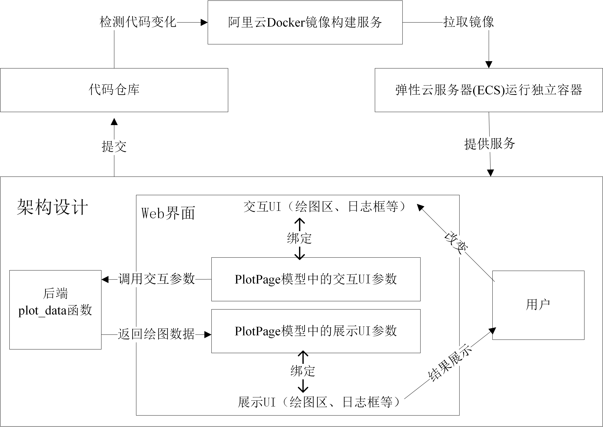

PlotApp
云绘图实验室
Designed By: YJY
Email: 522432938@qq.com
云实验室网页链接。PS: 首次进入需要等待较长时间，Heroku上的App需要重启。
APP为参加软件设计（中国石油集团测井）比赛而设计
如有错误，请批评指正。欢迎讨论交流。
设计要素与功能实现
软件的核心要素：
- 测试地址——云服务器地址，端口8080
- 图标——Ai4Energy Log
- 页面标题——云绘图实验室
- 删除数据按钮——删除已上传数据
- 文件上传UI组件——浏览本地文件夹并上传文件
- 日志UI组件——显示操作状态
- 绘图模式选择UI组件——选择绘图模式（题目5或题目2中的图形）
- 数据区间选择UI组件——选择数据区间（两端可调）
- 散点图形状选择UI组件——选择交会图散点形状，6个可选项。
- 交会图绘制区UI组件——绘制交会图（题目2），功能有：
- Download png——当前状态截图
- Zoom——放大选中区域
- Pan——拖动图形视窗（滚动条）
- Box Select——用方形框标记散点
- Lasso Select——任意形状标记散点
- Zoom in——整体放大绘图区
- Zoom out——整体缩小绘图区
- Autoscale——设置合适坐标轴范围
- Reset axes——重置坐标轴范围
- 读取任意个文件夹中的一位曲线（曲线名为文件名）
- 自动识别一个文件中的多条曲线（奇数列为x，偶数列为y）
- xy轴名称为第一条曲线的xy列名
- 组合图绘制区UI组件——绘制组合图（题目5），功能有：
- Download png——当前状态截图
- Zoom——放大选中区域
- Pan——拖动图形视窗（滚动条）
- Zoom in——整体放大绘图区
- Zoom out——整体缩小绘图区
- Autoscale——设置合适坐标轴范围
- Reset axes——重置坐标轴范围
操作方法
交会图绘图

- 先删除数据，确保无历史数据干扰
- 上传交会图绘图数据
- 选择绘图模式，交会图（CrossPlot）
- 选择数据范围（选择绘图数据百分比，两端可调），数据越多，绘图时间越长。数据太大，云端可能出现内存溢出现象，即没有反应。（2核2G服务器，内存小）
- 选择散点图形状
- 点击绘图
- 在交会图绘图区进行相关读图操作
- 删除数据
组合图绘图

- 先删除数据，确保无历史数据干扰
- 上传组合图绘图数据（只接受2个文件，否则报错）
- 选择绘图模式，组合图（Heatmap）
- 选择数据范围（选择绘图数据百分比，两端可调），数据越多，绘图时间越长。数据太大，云端可能出现内存溢出现象，即没有反应。（2核2G服务器，内存小）
- 点击绘图
- 在组合图绘图区进行相关读图操作
- 删除数据
选择不同散点形状时，点击绘制图像按钮则进行更新。任意时刻点击绘制图像按钮都会对图像进行刷新。
日志包含时间戳与信息，每次操作，时间戳会改变。
本地运行演示：

软件解析
文件结构
PlotApp/
├── lib/
│ ├── Data_Upload/ # 储存上传数据文件夹
│ ├── init.jl # 初始化设定服务选项
│ ├── model.jl # 储存UI页面交互变量
│ ├── PlotApp.jl # App设计主页面
│ ├── support.jl # 储存绘图支持函数，生成绘图数据与绘图布局
│ ├── types.jl # 定义绘图布局属性，常量
│ └── ui.jl # 储存UI页面布局函数
├── public/ # 储存中国石油图标
│ └── favicon.ico
├── test/ # 相关功能测试
│ └── ...
├── Dockerfile # Docker镜像配置文件
├── Project.toml # Julia环境配置文件
└── run.jl # 软件启动入口整体架构

依赖包
运行环境：Julia v1.7 及以上
在Project.toml文件中已配置
| 依赖包 | 版本要求 | 作用 |
|---|---|---|
| CSV.jl | / | 数据读取 |
| DataFrames.jl | / | 数据操作 |
| Genie.jl | v4.0 及以上 | 提供页面路由以及Web服务 |
| Revise.jl | / | 实时更新网页 |
| Stipple.jl | v0.23 及以上 | 交互页面设计 |
| StipplePlotly.jl | v0.12 及以上 | 交互页绘图设计 |
| StippleUI.jl | v0.18 及以上 | 交互页组件 |
| Tables.jl | / | 数据操作 |
API
仅包含核心API，更多见代码中函数及注释
| 所在文件 | 名称 | 类型 | 功能 |
|---|---|---|---|
| lib/init.jl | create_storage_dir | 函数 | 创建数据文件夹 |
| lib/model.jl | PlotPage | 结构体 | 页面模型，储存UI交互变量 |
| lib/support.jl | plot_data | 函数 | 调用子函数（read_CrossPlot_data等）进行绘图 |
| lib/support.jl | read_CrossPlot_data | 函数 | 读取CSV文件内容，生成交互图绘图数据 |
| lib/support.jl | read_CrossPlot_Layout | 函数 | 生成交互图布局数据 |
| lib/support.jl | read_Heatmap_data | 函数 | 读取CSV文件内容，生成组合绘图数据 |
| lib/support.jl | read_Heatmap_Layout | 函数 | 生成组合图绘布局数据 |
| lib/ui.jl | ui | 函数 | 创建Web页面。包含页面布局，交互变量监听 |
运行方法
云端运行
PS: 打开后需要10s左右的渲染时间。
本地运行
方法一：本地运行run.jl
- Step1: 安装Julia v1.7.3
- Step2: 使用CMD终端切换到项目文件夹(run.jl所在文件夹)
- Step3: 在CMD终端输入下面代码
julia .\run.jl方法二：本地docker容器
- Step1: 安装Docker Desktop
- Step2: 拉取镜像，cmd终端中输入：
docker pull registry.cn-hangzhou.aliyuncs.com/ai4energy/plotapp:local- Step3: 在Docker Desktop运行镜像。
5.3 部署方式
- Step1: 安装docker
- Step2: 修改
run.jl中SERVEURL地址，改成对应服务器地址。 - Step3: 上传文件至服务器
- Step4: 构建镜像，示例
docker build -t plotapp:1.5 .- Step5: 使用docker run生成容器并运行。示例（其中容器卷地址需要适配对应服务器地址）：
docker run -d -p 8080:8000 --name plotappp
-v /home/plotapp/upload:/home/genie/app/lib/Data_Upload plotapp:1.5This page was generated using DemoCards.jl.